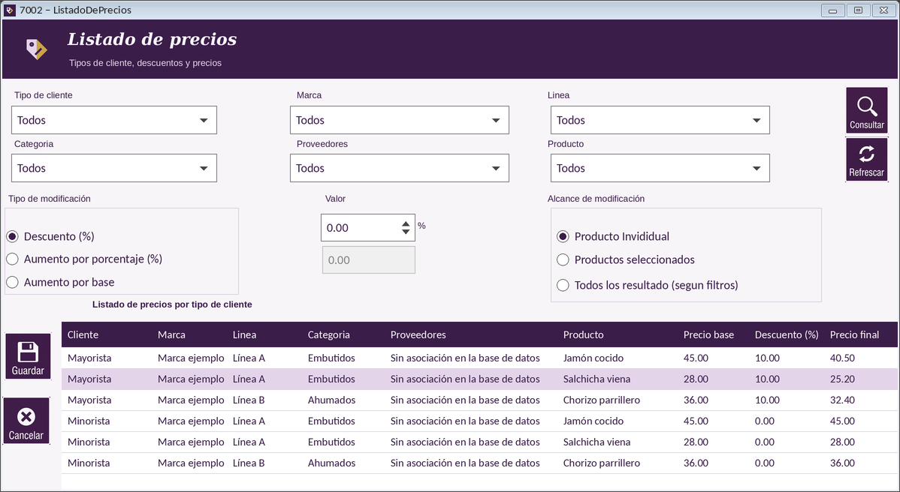

|   |
| |
Guía de Listado de precios | Consultar y filtrar el listado | Modificar precios y descuentos | Guardar los cambios | Botones de Listado de precios | Mensajes frecuentes de Listado de precios

Ubicación de los filtros, de la modificación de precios y del listado.
El listado de precios muestra, para cada tipo de cliente, el precio base de cada producto, el descuento que se le aplica y el precio final. Desde esta pantalla también puede ajustar descuentos y precios.